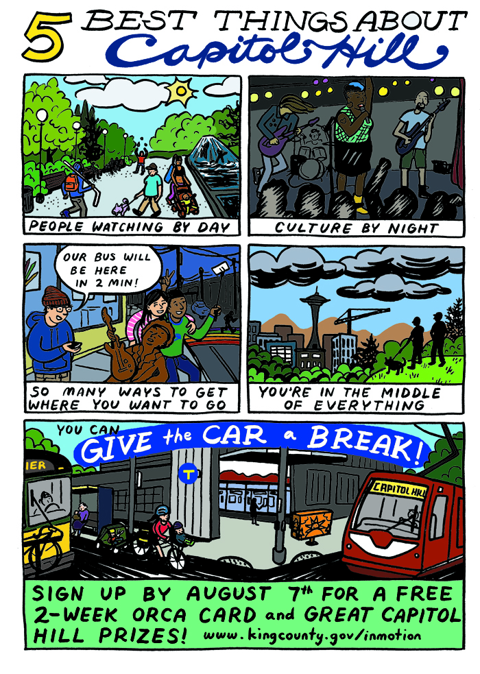
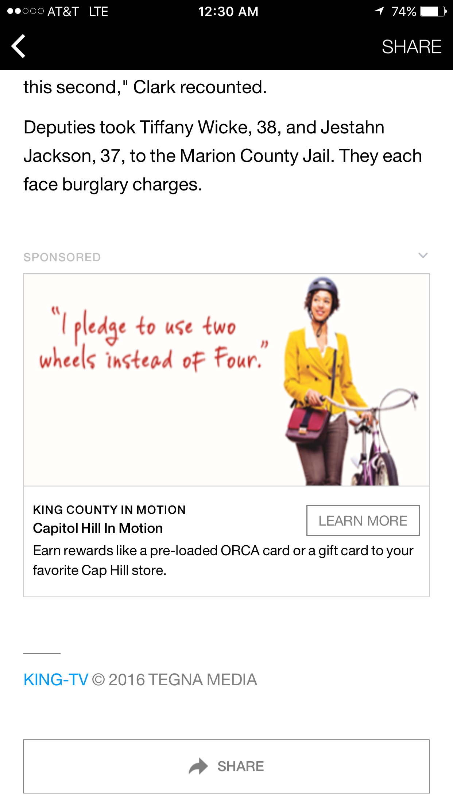

Capitol Hill In Motion
Capitol Hill In Motion is a recent evolution of the individualized marketing approach used by King County, Washington State, USA. It illustrates how to further engage communities where most trips are already not drive-alone. With remarkably high signup rates, this campaign also delivered a solid 16% average reduction in drive-alone trips (surpassing the campaign goal and King County’s overall goal of a 10% reduction). Designated in 2017.
Background
Since creating In Motion in 2004, King County Metro Transit has applied a growing toolkit of community-based social marketing techniques to persuade Seattle-area travelers to drive less. Capitol Hill is a densely populated residential district, well-served by transit. With easy access to trains, buses, and car sharing, 70 percent of people were already commuting using transportation options other than driving alone - transit, biking, walking, carpooling, vanpooling, and teleworking. So, how do you reduce the small number of remaining drive-alone trips?
Setting Objectives
The program objectives were:
- Enroll 1,000 car-owners in the In Motion program – representing ten percent of the 10,000-household project area.
- Motivate 75 percent of participants to pledge to reduce their drive-alone trips.
- Motivate participants to reduce drive-alone trips by ten percent and encourage them to maintain that commitment.
Getting Informed
To understand neighborhood needs, King County Metro Transit researched, identified and interviewed local stakeholders and business leaders in each of its targeted neighbourhoods. The approach used is outlined in a separate case study here.
For this community, King County and consultant C+C conducted in-depth stakeholder interviews and focus groups with six trusted community organizations. The team discovered that while the Capitol Hill neighborhood has a high walkability, the hills are seen as a barrier to biking and walking by some – especially in inclement weather. Capitol Hill was also experiencing an influx of newcomers who had not tried transit, biking, or car sharing. These new residents could use the program as an opportunity to try a new mode for getting around.
Key motivators included convenience of transit, the upcoming opening of a new Capitol Hill light rail station, and the disincentive of dwindling parking. Gift cards to popular businesses and transit passes were the most attractive incentives to offer. Digital outreach (online news outlets and social media) was cited as one of the best ways to reach these residents.
The planning team also reviewed Capitol Hill demographic and travel information from Commute Seattle and EMC Research’s 2014 Center City Commute Mode Split Survey, Downtown Seattle Association’s Neighborhood Profile, and other sources. Even though Capitol Hill had one of the lowest car-ownership rates in the city of Seattle, the influx of young professionals had contributed to a faster-than-expected rise in car ownership rates. Capitol Hill was also among the youngest and most educated downtown neighborhoods, with a median age of 35, and nearly two thirds of the population possessing an Associate’s Degree or higher.
To further engage a community where most trips were already not drive-alone, Capitol Hill In Motion focused on car users and car-owning households.
Delivering the Program
Capitol Hill’s In Motion program was based on the research described above and on King County’s existing In Motion program model. The campaign aimed to encourage people who drive alone to change their travel behavior to riding transit, joining a carpool or vanpool, bicycling, or walking. The12-week outreach campaign took place from May – August 2016, timed to follow the rollout of a much-anticipated Link light rail route opening after seven years of construction. The tag line, “Less Driving, More Living. Earn Rewards.” was developed, based on neighborhood motivators and barriers. Campaign materials were designed to showcase young urbanites using transportation options, and highlighted popular incentives, from transit passes to a FitBit, to weekly prizes from neighborhood hotspots. (Financial Incentives)
With campaign creative in-hand, organizers employed a variety of tactics to meet the campaign objectives.
Gas station advertising. Since 85 percent of people fill up their gas tank within a mile of home, the team paid for ads at gas pumps and convenience stores to reach neighborhood car owners. These ads generated a total 510,750 impressions.

Program ads on gas pumps reached car owners
Chalk street stencils were also used to reach residents in a creative, unexpected way, and keep the campaign top-of-mind as residents went about their daily routines.

Chalk messages kept the campaign top-of-mind
Guerilla Street Teaming. This campaign broke out of the traditional “two-staffers-at-a-table” event outreach structure, with roving guerilla street teams signing up residents who were playing Pokémon Go in popular parks or queuing up for ice cream at a neighborhood hotspot. For the largest one-day event during the project period, Capitol Hill Pride, an 11-person In Motion street team covered carefully mapped zones, engaged over 1,350 people face-to-face, and collected over 250 pledges – an In Motion one-day record. Throughout the summer, the team garnered staggering 724 signups, with more than a quarter of participants citing events as their referral source.

Roving guerilla street teams signed up residents
Direct Mail and Travel Incentives. Organizers devised a mailing list of 10,000 target households within a walkable half mile of the new light rail station, prioritizing households with a registered vehicle. They then sent a series of three targeted mailers to those in the project area – a pre-program postcard, a robust enrollment packet with a neighborhood travel map and program information, and a reminder postcard. Those who enrolled in the program were sent a customized packet of travel information and bus schedules, and their choice of two incentives: a two-week unlimited transit pass, or a tote bag. A full 70 percent of participants requested information on travel options, and nearly all participants (92 percent) requested a transit pass. (Building Engagement Over Time; Vivid, Personalized, Credible, Empowering Communication)
.jpg) Three mailers were sent to 10,000 households within a walkable half mile of the new light rail station.
Three mailers were sent to 10,000 households within a walkable half mile of the new light rail station.
Social Media Cartoon. To take advantage of neighborhood pride and elicit social sharing, organizers enlisted a Capitol Hill artist to draw a “5 Best Things About Capitol Hill” cartoon that emphasized the neighborhood’s improved transportation network. The cartoon proved to be a hit, with 359 “Shares” on Facebook, and a second round of media coverage for the campaign. (Mass Media)

A cartoon by a local artist tapped into community pride to generate social sharing
Facebook Ad Campaign. A robust, geo-targeted Facebook ad campaign with three rounds of creative kept the campaign fresh, despite high saturation in the neighborhood. The ads expressed the notion that using travel options was the social norm, with text like, “Join 1,500 of your neighbors who pledged to get In Motion." When the team had heard from the community that they had “seen the ads a million times,” the popular “5 Best Things about Capitol Hill” program cartoon was rotated in. From an advertising budget of $10,526, the Facebook ads generated 1.3 million impressions, 25,176 clicks to the campaign website, and 1,040 post engagements. The ads worked, with 24 percent of participants citing Facebook when asked how they had heard about the program. (Mass Media)

Three rounds of geo-targeted Facebook ads kept the campaign fresh
Partnerships with Local Influencers. To help spread the word, C+C partnered with influential neighborhood organizations, from grocery and coffee shops, to the local library and the Capitol Hill Blog. Partners hosted events, provided gift cards for weekly drawings, and promoted the program by displaying posters, window clings, bag stuffers, ads, and table toppers.
Overcoming Barriers. Here’s how the program helped reduce key barriers to taking action. (Overcoming Specific Barriers)
Inconvenience, including hills/ topography and inclement weather
- Program tag line and messaging highlighted ease of use
- Ran program during good-weather season, making it easier to have a positive first experience trying travel options
- Branded umbrellas were offered as an incentive at events
Influx of new residents unfamiliar with transportation options perceived options as inconvenient
- Provided neighborhood map highlighting close, convenient options for transit, bicycling, and walking
- At registration, participants were offered customized travel information on transit schedules, ride sharing, car sharing, bicycling, and more.
- Social norming (Norm Appeals): Highlighted stories and photos of neighbors using travel options, sharing ease of use; mid-program messaging such as “Join 1,500 Capitol Hill neighbors …”; mid-program participation update in popular neighborhood news outlets; created a strong visual presence in the community through the use of branded posters, window slicks, sidewalk stencils, gas station ads, and events outreach.
Some residents believed they were already “doing all they can” by limiting drive-alone trips (conditions included a robust existing transportation network, high walkability to amenities/employers, low car ownership, and a variety of longstanding commuter programs and laws stipulating employer-provided bus passes).
- Program call-to-action emphasized reducing a few more trips: pledge to shift just two (or more) round trips per week from driving alone to another option.
- Materials highlighted the variety of popular, non-work neighborhood destinations accessible by transit, including museums, parks, local businesses, and classes.
- Program offered and highlighted non-transit-pass incentives, so those already using an employer-provided transit pass were still incentivized to reduce drive alone trips.
- Reached car owners through gas station ads and by targeting mailings to car-owning households.
Financing the Program
The budget for Capitol Hill In Motion was $220,000 (US), funded by a federal CMAQ-Congestion Mitigation and Air Quality grant.
Measuring Achievements
- Pre-Program Survey: As a required part of the enrollment process, all 1,874 participants completed an in-depth travel behavior survey at the start of the program (online or on paper). Of the 1,874 participants, 91% (1,707) pledged to reduce their drive-alone trips.
- Post-Program Survey: A post-program survey asking the same set of travel questions administered at the start of the program was sent to participants via email and traditional mail, with prize drawing incentives to encourage participation. A total of 396 participants (21%) completed the post-program survey.
- Trip Logging: Throughout the program, participants were encouraged by email and mail to log their weekly trips (online or on mailed cards) and incentivized with entry into weekly prize drawings for 1-2 $50 gift cards to popular local businesses. In total, 427 participants (22.7%) logged their trips, reporting shifting 4,049 round trips to modes other than driving alone.
- Transit Data: Participants received pre-loaded transit cards, from which Metro collected aggregate program data to measure participants’ transit boardings, fare re-loading value, and whether the rider had added a pass. These metrics indicated shifting non-riders to riders, and occasional riders to frequent riders.
.jpg)
Transit card data measured boardings, fare re-loading value, and passes added
- Legacy Survey: One year after the program ended, a legacy survey was distributed to participants who had also responded to the pre- and post-program surveys to gauge how effective the program had been at changing residents’ travel behavior over the long term. Among the 144 participants who completed the legacy survey, results showed the continued travel mode shift to non-drive alone modes. In total, drive-alone mode share continued to decrease, moving from the program’s initial 16% reduction to 17%. This reduction was accompanied by corresponding increases in transit and walking proving the program had a long-term effect on travel behavior in Capitol Hill.
Feedback
Emails and social media posts throughout the program shared neighborhood progress with participants. At the end of the program, participants were also emailed final overall results.
Results
Impacts – Individual Participants
- On average, participants cut drive alone trips by 16%.
- 58% of survey respondents reported a weekly reduction in driving of two or more trips.
- A full 84 percent of survey respondents reported increasing their bus rides by 1-6 trips per week after signing up for the program. Additionally, 65 percent of participants said that they continued to use their transit pass past the end of the campaign, showing adoption of ongoing travel behavior change.
- One year later, proof of long term travel behavior changes continued, with legacy survey results showing drive-alone mode share had continued to decrease after the program had ended – moving from the program’s initial 16% reduction to 17%. This decrease was accompanied by corresponding increases in transit and walking.

Impacts - Overall
Population size: The project area had 10,000 households. 1,874 individuals (representing 18% of these households) enrolled in the program. That was the third-highest participation percentage of all 46 In Motion neighborhood programs to date. The top-three cited referral sources were social media, events, and direct mail, demonstrating that the campaign’s mix of traditional and innovative tactics worked.
Nearly all participants (91 percent) pledged to reduce their drive-alone trips by two or more trips per week. 1,692 transit cards were sent to participants; transit boarding data showed that 73 percent of the cards were utilized for 25,129 total transit trips during the program period.
The subset of 427 program participants who tracked their trips over the 12-week program documented shifting 4,049 round trips from driving alone to another option. These avoided trips resulted in reductions of 42,441 single-occupancy vehicle miles driven, 1,965 gallons of gasoline, and 38,590 pounds of CO2 emissions. Extrapolating to a full year, if just those 427 trip-loggers maintained their same behavior for a year, they would reduce approximately 169,764 miles per year.
Extrapolating now from the 427 trip-trackers to all 1,874 participants, one would expect the reduction to grow to up to 1,874 /427 x 169,764 = 745,053 miles per year.
Triangulation Data
Extrapolating to a full year and to the entire population of participants involves a number of uncertainties. For example, travel volumes and patterns may change by the season. As another example, those participants that tracked their trips might be more engaged than those that didn’t. Therefore, additional data are presented below to provide additional perspectives on and certainty regarding program impacts. We believe that overall, they corroborate the above extrapolations.\
Transit Card Use:
- 1,692 transit cards were sent to participants and transit boarding data showed that 73 percent of these cards were utilized
- Almost three times as many participants used their transit cards at least once during the program, as compared with the number that logged their trips (1,240 vs 427)
- During the three-month program, the participants that logged their trips reported only 4,049 trips in all that were NOT drive-alone (i.e. including all other modes of transportation such as walking and cycling in addition to transit). However, card use data shows that there were actually six times that many transit trips (25,129 trips, not counting trips using other alternative modes) made by program participants during the 3-month program period
- Transit card use continued after the program, but at reduced levels. There were 16,238 trips during the following six-month period
Trip Logs
- Of the logged trips, 43% of non-drive-alone trips were by transit. Extrapolating with that ratio, if the 41,367 documented transit trips were to represent 43% of all non-drive-alone trips, then that would total 96,202 non-drive-alone trips in three months. If those trips were the same average length documented by the trip loggers (5.24 miles round-trip), that would be 504,098 miles reduced over just the three-month period.
Participant Panel
- A panel analysis, which only included the mode share and shift of 396 participants who responded to both the pre- and post-program surveys, showed that drive-alone mode share decreased significantly (16%), with corresponding increases in transit (9%) and walking (5%). Bicycling and carpooling mode share increased 5% and 4% respectively. Not all of these respondents logged their trips.

Legacy Survey
- Results from the 144 participants who completed the legacy survey showed the continued travel mode shift to non-drive alone modes. In total, drive-alone mode share continued to decrease, moving from the program’s inital 16% reduction to 17%.

Contacts
Sunny Knott, Senior Transportation Planner,
King County Metro
Email: Sunny.Knott@kingcounty.gov
Notes
The successful In Motion program model has been implemented in dozens of neighborhoods. The Capitol Hill program combined tried-and-true In Motion TDM program tactics (leveraging stakeholder feedback, direct mail, postering, business partnerships, etc) with new tactics tailored to this urban neighborhood, including:
- A viral cartoon by a neighborhood artist that connected with the arts-driven neighborhood and was shared 359 times
- Unconventional program reminders such as chalk stenciling on sidewalks, and gas station advertising to reach car-owners
- Guerilla street teams that broke out of the traditional “2-people-at-a-table” events approach, canvassing neighborhood events and hotspots to enroll 700+ residents (including Pokémon Go players in popular parks)
- Digital ads that used social norming and reinforced messaging to target households in a forum where they could instantly click through to sign up
Nearly two out of three program participants cited these innovative tactics as their referral sources, demonstrating that these tactics helped the program connect with residents and ultimately reduce drive-alone trips.
This case study was compiled in 2018 by Jay Kassirer based on information provided by Sunny Knott, Senior Transportation Planner, King County Metro and Erin Cawley-Morse, Director, C+C.